趣味の記録を
もっと便利に、もっと楽しく。
shuminologが提供する、趣味の記録や
管理に役立つWebアプリケーションです。
各アプリの詳細や操作方法は
以下からご覧いただけます。
Web Applications
カードまたは詳細ボタンから使い方を確認できます
スマートフォンでの利用を推奨します
・iPhone（Safari）での動作を中心に確認しています
・iPhone SE等の小さめの端末では表示が崩れる場合があります
talklog
トークイベント記録推しとのミーグリ・イベントでの会話をチャット画面風に再現・記録できます。
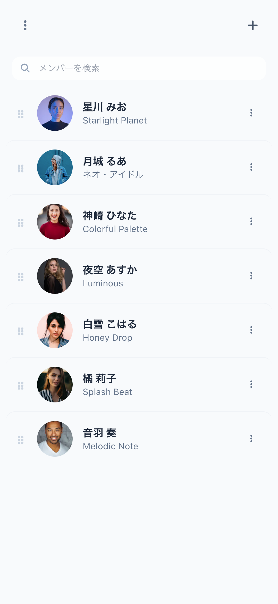
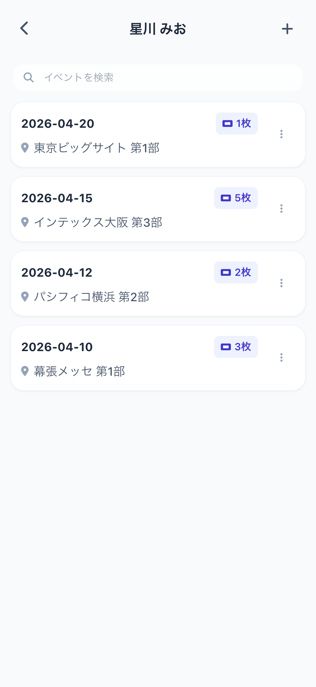
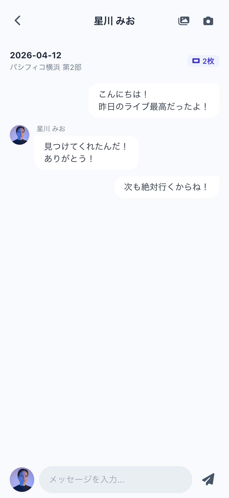
maillog
ラジオメール記録ラジオ番組の採用メールとパーソナリティの反応を一元管理できます。
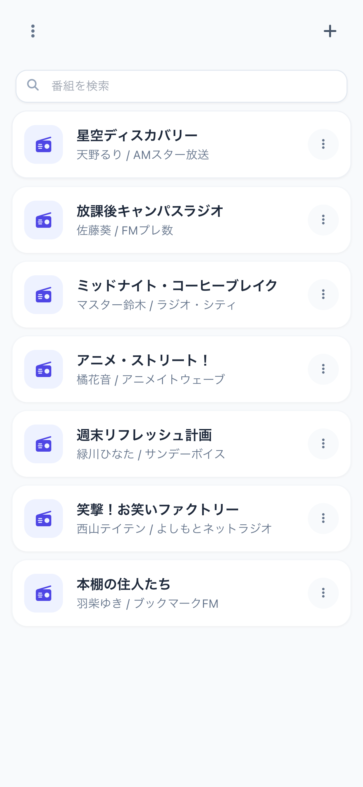
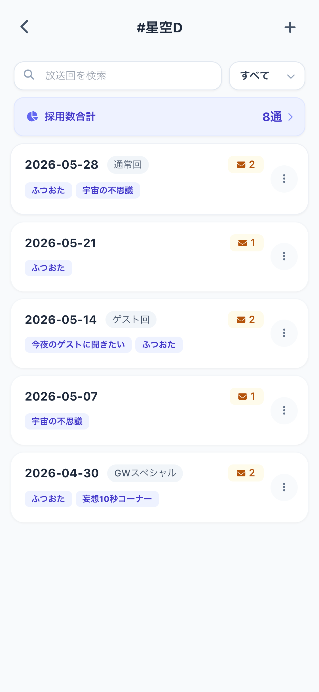
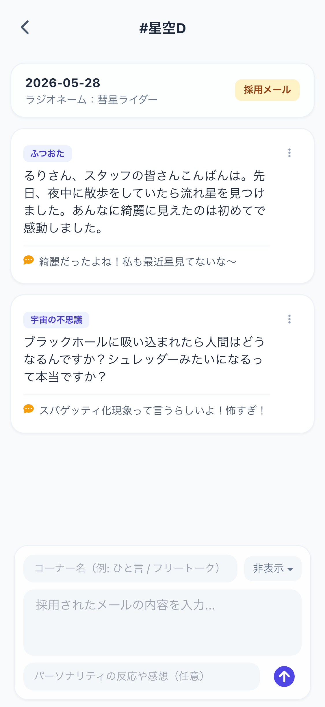
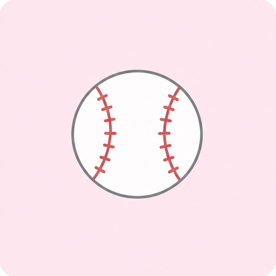
npblog
野球観戦記録応援球団の試合観戦記録とスコア・勝率などを管理できます。
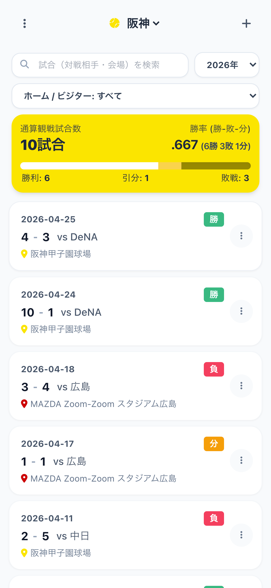
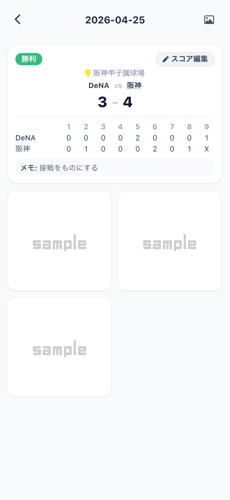
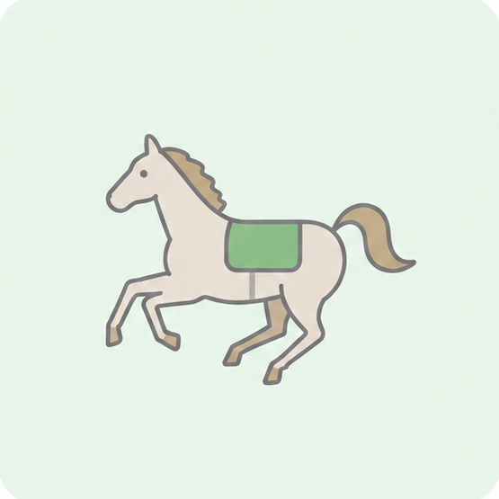
horselog
出資馬検討出資検討馬の血統・価格・評価などをまとめて管理できます。
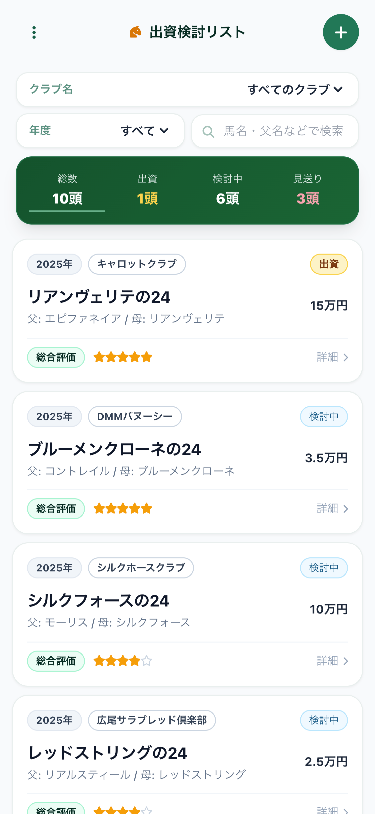
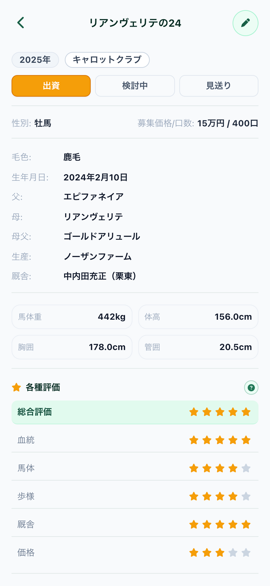
スマホにアプリとして
インストールする方法
PWA（プログレッシブ・ウェブ・アプリ）に対応しており、ブラウザから
ホーム画面に追加することで、通常のアプリと同じように
全画面で快適にご利用いただけます。
iPhone (Safari)
- Safariで対象のアプリページを開きます。
- 画面下部にある「共有」ボタン（四角から矢印が出ているアイコン）をタップします。
- メニューからスクロールして「ホーム画面に追加」を選択します。
- 環境や設定によっては、「Webアプリとして追加」の項目をオンに設定します。
- 右上の「追加」をタップすると、ホーム画面にアプリのアイコンが作成されます。
安心のデータ管理と
共通JSONバックアップ
すべてのアプリで共通して、プライバシーを守る安全なローカル保存と、
ブラウザの仕様による削除に備えたJSONファイルバックアップ機能に対応しています。
🔒 安心のローカル保存
データはすべてお使いの端末（ブラウザ）のローカル環境に直接保存される仕組みになっています。サーバーに個人情報を送信しないため、プライバシーの面でも安心してご利用いただけます。
⚠️ ブラウザ仕様による削除に備えたバックアップ推奨
端末内に安全に保存されますが、ブラウザの仕様やストレージの容量制限、長期間の未利用などによってデータが削除されてしまうケースがあります。万が一のデータ消失を防ぐため、全アプリ共通でJSONファイルのエクスポート（バックアップ）とインポート（復元）機能を搭載しています。定期的なバックアップでいつでも安全にデータの引き継ぎが可能です。